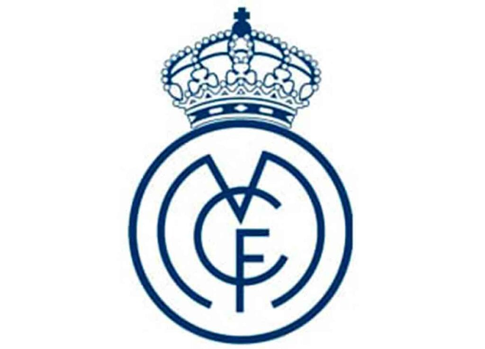

Historia
20/11/2022
 Historia de real Madrid
El Real Madrid había aceptado el hecho de que el éxito que buscaba solo podía ser podía ser posible con los mejores jugadores. El portero Zamora y los defensas Ciriaco y Quincoces fueron fichados. El trío formaba la mejor defensa del mundo. La temporada 1931-32 fue histórica para el equipo entrenado por Lippo Hertza. Los merengues terminaron sin liga sin perder un solo partido. Fue el inicio de una era de dominancia del Real Madrid durante la II República: 2 ligas y 2 Copas en 4 años. Solo un mes tras la victoria en la Copa de la República en 1936, estalló la Guerra Civil. El momento de gloria fue amenazado primero y destruido después por el conflicto militar. Muchos jugadores terminaron sus carreras o dejaron el país para marchar al exilio. El equipo no se recuperaría hasta mucho después de la guerra. El presidente del Real Madrid cuando empezó la el conflicto, Sánchez Guerra, fue exiliado, y un presidente interino, Antonio Ortega, fue ejecutado por el régimen franquista tras la Guerra Civil. Debido a la guerra en Madrid, el club intentó disputar la Liga Catalana Republicana ajena al conflicto, gracias en parte al entrenador catalán del club, Francisco Brau. Pero pese al apoyo del sindicato de jugadores y de todos los demás clubes catalanes, el F.C. Barcelona vetó su participación. La Guerra Civil y la posguerra fueron durante más de una década una tragedia absoluta para el equipo. El Real Madrid no ganaría ninguna liga entre 1933 y 1954, su peor racha de su historia; y solamente 2 Copas, en 1946 y 1947. También estuvo en dos ocasiones al borde de descender a Segunda División. El rival local, el Atlético, era apoyado por el ejército que había ganado el conflicto. Por su parte, como club que había apoyado la República, no generaba simpatías en el régimen de Francisco Franco y durante los 15 primeros años del franquismo el club se encontró en la posición más débil de su historia. En 1943, en las semifinales de Copa, el Real Madrid se enfrentó al F.C. Barcelona. En Les Corts, los azulgranas ganaron 3-0. En la vuelta, el Madrid eliminó a su rival con una remontada histórica. 11-0, y una rivalidad que ya existía se convirtió en eterna. El 15 de diciembre de 1943 Santiago Bernabéu se convirtió en el presidente del club. Antiguo jugador y entrenador, se convirtió
.jpg)